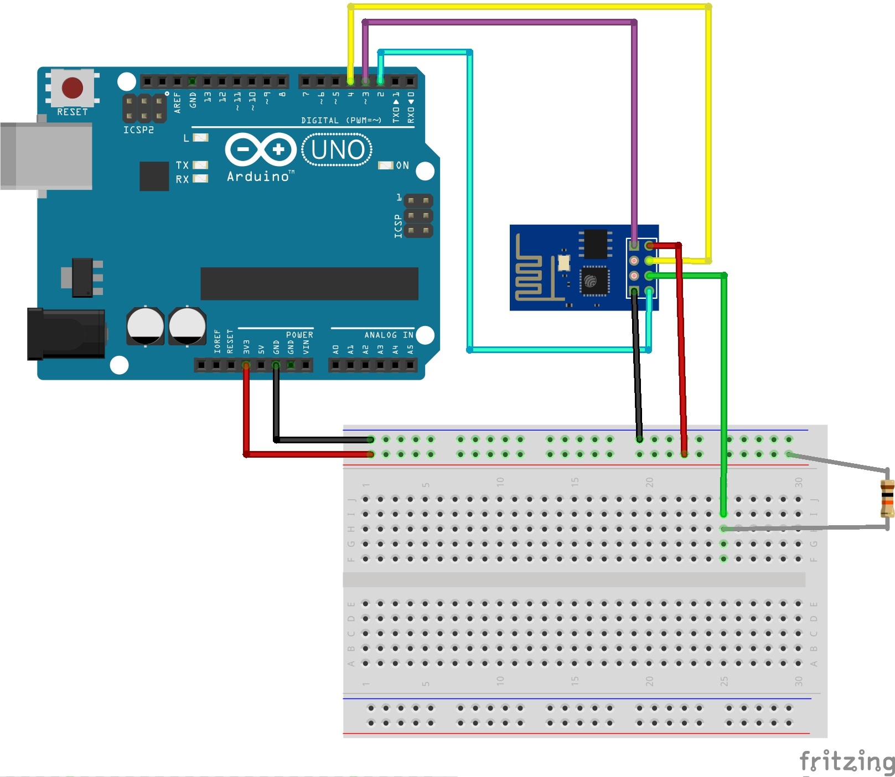

The ESP8266 is a very small, very cheap wifi module. It can be programmed directly, but we will use it with an arduino. These chips are very small, cheap, and will allow the arduino to make wifi connections, ping servers, connect to mobile devices, act as a web server, and so on. We will connect to an external webserver and return text from the page.
The ESP8266 is a finicky little chip, and care must be given to connect everything properly. The most important thing to note is that it operates at 3.3v, not 5v. Do not connect this chip to the 5v pin. It will probably break things. The ESP chip is small, cheap, and does not contain failsafe logic. In other words, it will just fry.
After conneting the RX,TX,Ground, and VCC pins, it seems you are ready to begin - but there are some things about the ESP8266 that you will need to know.
The first is that the CH_PD chip needs to be floated high. This means it needs to be connected - through a resitor (a 10k will do) - to a power supply. This allows the pin's signal to be '1' instead of '0'. The CH_PD pin is the "Chip Enabled" signal.
Next, the reset PIN also has an interesting operation. It is 1 for normal operation, and 0 for reset. We could float it high, just like the CH_PD chip - but then we wouldn't be able to reset our device. One option would be to wire it to a button that grounds the pin when pressed. We will connect it to a digital out pin on the arduino (pin 4, in our case). This lets us reset the ESP8266 in our software by changing the output of the pin. This will come in handy
We will need to install a custom library for this project. Read here for more information on installing arduino libraries
Okay, let's get started
When it comes to internet connected devices, there are many many reasons errors can occur - often without helpful fedback. This difficulty in debugging always been an issue with internet connected devices. Don't worry. Hang in there. Keep working at it. Be smart. Narrow down your potential issues systematically. I believe in you.
If you are seeing errors in your serial monitor that have to do with connection, relax! Things could be worse! You are sending data and reciving it from the esp8266, which is responding to the commands being sent and also is not on fire.
The Arduino UNO can operate at 3.3v output, but many other arduino's operated at 5v and needed a line converter to connect to the board at 3.3v.
The example code we used is very simple, just reading a simple plaintext web page. We could set up our own webpage with some web code that, say, displays tweets. We could output this to an LCD screen from the Arduino. Perhaps we could modify this webpage from a phone using technologies like JQuery (edit: wait, I mean node.js or php. The arduino wouldn't be able to process client side javascript). No need to even write mobile phone apps. Without complicating the arduino code much and just a little knowledge of web programming, we already are in a ready state for hacking away at projects. That said, there is still much more to be done. Programmers have turned these little devices into web servers and more. Check out ESP8266.com and go googling about projects for a host of information and ideas, and lots of open source code.
